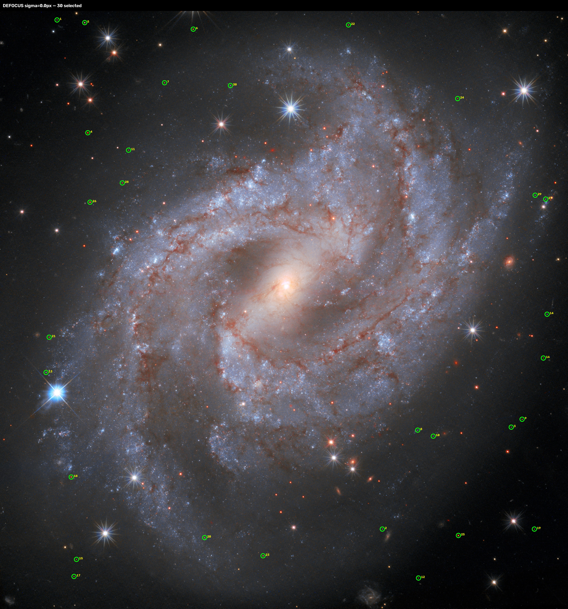
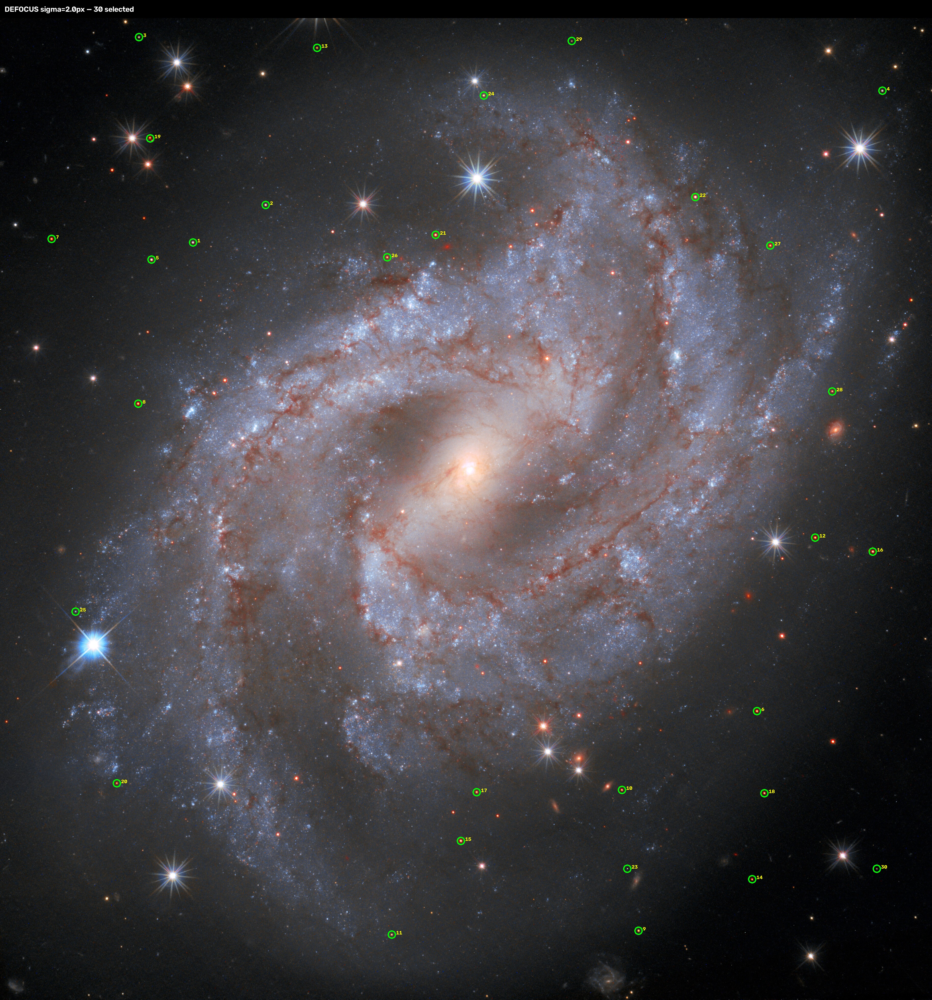
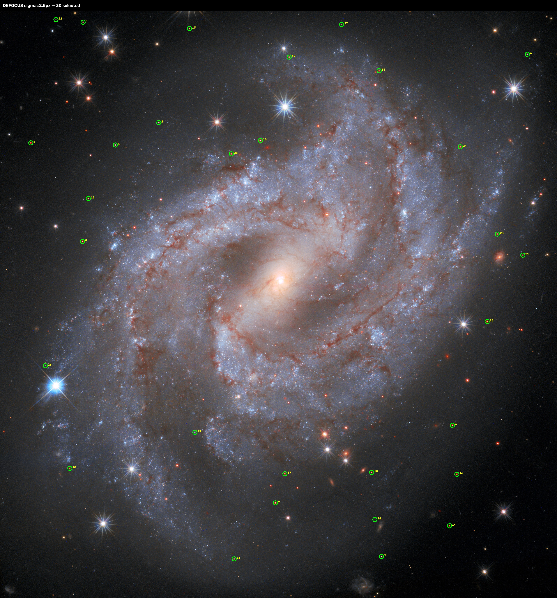
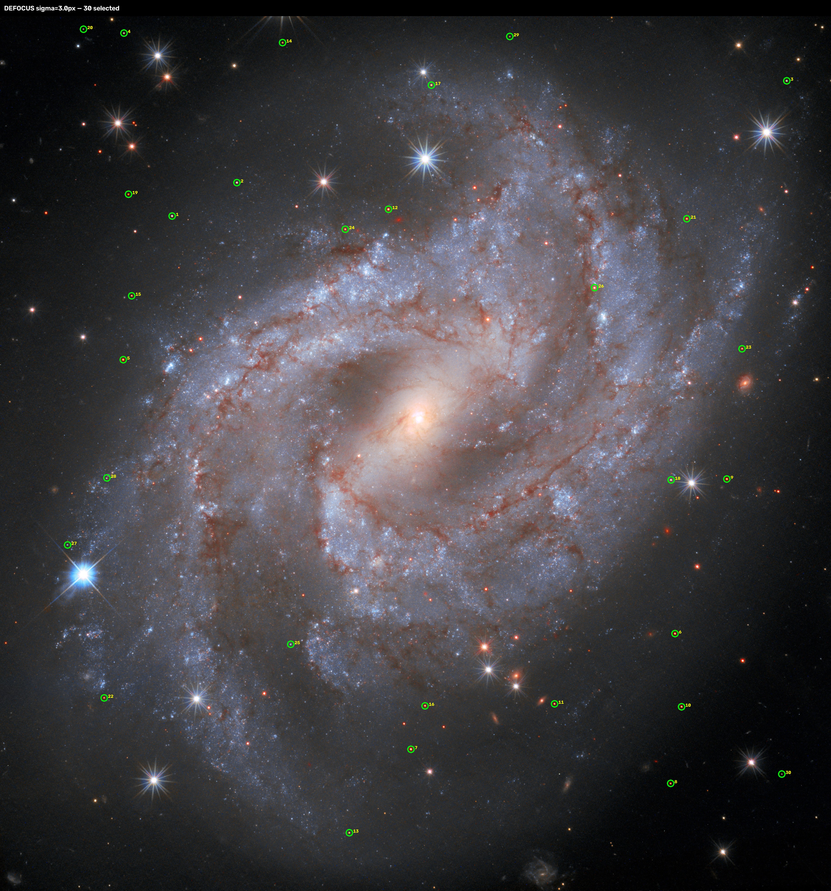

NGC 2525 — DEFOCUS STAR EXTRACTION
No astrometry solve. Select the blur level whose numbered circles land on real stars most consistently.
sigma 0.0px — 30 stars

sigma 1.0px — 30 stars
sigma 1.5px — 30 stars
sigma 2.0px — 30 stars

sigma 2.5px — 30 stars

sigma 3.0px — 30 stars
